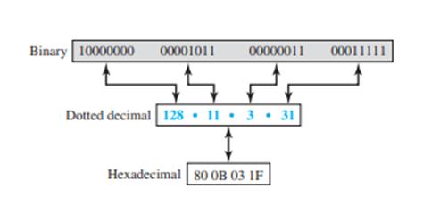
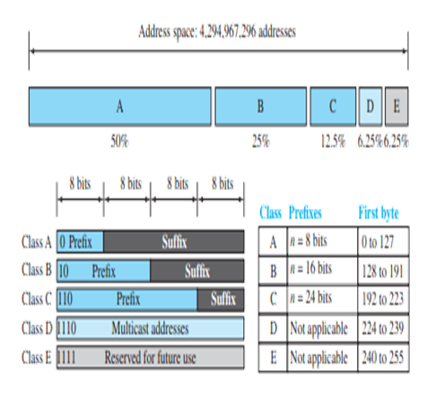

An address space is the total number of addresses used by the protocol. IPv4 uses 32-bit addresses, which means that the address space is 232 or 4,294,967,296 (more than four billion). If there were no restrictions, more than 4 billion devices could be connected to the Internet

CLASSFUL ADDRESS
The whole address space was divided into five classes (class A, B, C, D, and E)

- In class A, the network length is 8 bits, but since the first bit, which is 0, defines the class, we can have only seven bits as the network identifier. This means there are only 27 = 128 networks in the world that can have a class A address.
- In class B, the network length is 16 bits, but since the first two bits, which are (10)2, define the class, we can have only 14 bits as the network identifier. This means there are only 214 = 16,384 networks in the world that can have a class B address.
- All addresses that start with (110)2 belong to class C. In class C, the network length is 24 bits, but since three bits define the class, we can have only 21 bits as the network identifier. This means there are 221 = 2,097,152 networks in the world that can have a class C address.
- Class D is not divided into prefix and suffix. It is used for multicast addresses. All addresses that start with 1111 in binary belong to class E. As in Class D, Class E is not divided into prefix and suffix and is used as reserve.
IPV4 HEADER

- VERSION: Version of the IP protocol (4 bits), which is 4 for IPv4
- HLEN: IP header length (4 bits), which is the number of 32 bit words in the header. The minimum value for this field is 5 and the maximum is 15.
- Type of service: Low Delay, High Throughput, Reliability (8 bits)
- Total Length: Length of header + Data (16 bits), which has a minimum value 20 bytes and the maximum is 65,535 bytes.
- Identification: Unique Packet Id for identifying the group of fragments of a single IP datagram (16 bits)
- Flags: 3 flags of 1 bit each : reserved bit (must be zero), do not fragment flag, more fragments flag (same order)
- Fragment Offset: Represents the number of Data Bytes ahead of the particular fragment in the particular Datagram. Specified in terms of number of 8 bytes, which has the maximum value of 65,528 bytes.
- Time to live: Datagram’s lifetime (8 bits), It prevents the datagram to loop through the network by restricting the number of Hops taken by a Packet before delivering to the Destination.
- Protocol: Name of the protocol to which the data is to be passed (8 bits)
- Header Checksum: 16 bits header checksum for checking errors in the datagram header
- Source IP address: 32 bits IP address of the sender
- Destination IP address: 32 bits IP address of the receiver
- Option: Optional information such as source route, record route. Used by the Network administrator to check whether a path is working or not.